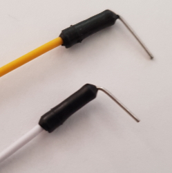

3.1 Pasos previos
Los pasos al detalle lo explica en https://tecnoloxia.org/mclon/estrutura/pasos-previos/ pero con la propuesta de Catedu sólo tenemos que seguir los siguientes pasos:
3.1.1 Lo que tienes que hacer tú
Al insertar el escudo, no nos queda visibles los pines A6 y A7 del Robodyn por lo tanto tenemos que insertarlos ante pero doblados antes de poner el escudo :

Fuente: https://tecnoloxia.org/mclon Maria L CC-BY-SA
También tienes que doblar los pines de los sensores siguelíneas para que queden perpendiculares al sensor:
Fuente: https://tecnoloxia.org/mclon Maria L CC-BY-SA
3.1.2 Recomendaciones
Para evitar que los picos de los motores afecten a la electrónica de la placa, es recomendable soldar un condensador de 0.1µF en los motores :
Fuente: https://tecnoloxia.org/mclon Maria L CC-BY-SA
También es conveniente que con un soldador caliente fijes los tornillos en las piezas impresas 3D, te facilitará el montaje (no te pases calentando) o si el orificio es muy grande, usar un pegamento para fijar la tuerca a la pieza 3D:
Fuente: https://tecnoloxia.org/mclon Maria L CC-BY-SA
3.1.3 Ya realizado por Catedu
Soldado el controlador TB6612FNG
Fuente: https://tecnoloxia.org/mclon Maria L CC-BY-SA
La soldadura en la placa Robodyn
Fuente: https://tecnoloxia.org/mclon Maria L CC-BY-SA
La soldadura entre Echo y Trg del sensor US
Fuente: https://tecnoloxia.org/mclon Maria L CC-BY-SA

mClon por https://tecnoloxia.org/mclon bajo licencia Creative Commons Reconocimiento-CompartirIgual 4.0 Internacional License.